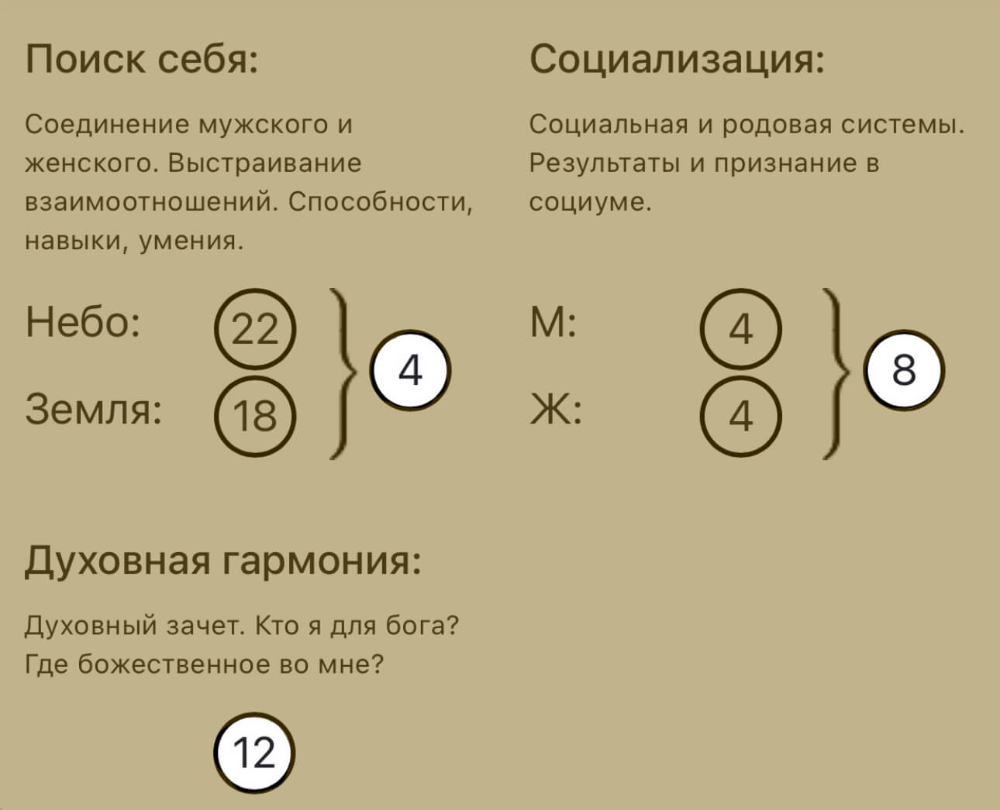

Предназначение
С помощью метода Матрица Судьбы можно рассчитать не одно, а целых 3 предназначения:
- Личное предназначение показывает, что человек должен изучить свою душу, свой характер, свои таланты. Важно осознать в себе негативное и позитивное, сделать выбор и развивать в себе все хорошее, светлое, доброе, принять темное (минусы энергий), но осознанно трансформировать эту «темноту» и уметь ею управлять. Выполнить предназначение для себя – это значит научиться одинаково думать, говорить, делать
- Социальное предназначение – это то полезное, что мы даем во внешний мир. Это задачи по нашему роду. Они даются нам в минусе. Наша задача вывести их в плюс. Проанализируйте свою жизнь, возможно вы уже выполнили это предназначение.
- Общее (духовное) предназначение. Духовное предназначение – одна из самых важных энергий в матрице, а точнее вторая по важности после точки Характера человека – это точка духовного зачёта. Это самое важное предназначение человека. Оно показывает то, для чего вы пришли в этот мир. Это то, что наполнит вашу жизнь смыслом.
Первое предназначение. Личное.
4 енергия. Император (Для женщин)
- Поймите и примите своего отца. Учитесь этому и по отношению к другим мужчинам.
- Проявляйте силу и власть, но с милосердием
- Избавьтесь от гиперконтроля. Доверьтесь своему мужчине, позвольте ему выполнять роль хозяина в доме мужчине, позвольте ему выполнять роль хозяина в доме
- Воспитывайте мужественных сыновей и женственных дочерей
- Умейте признавать и исправлять свои ошибки
- Развивайте в себе женственность
Второе предназначение. Социальное.
8 енергия. Справедливость
- Изучайте законы кармы. Кармический менеджмент. Понимание причинно-следственных связей позволит вам находить выходы из сложившихся ситуаций, понимать, как надо действовать в дальнейшем.
- Знание кармических законов позволит вам помогать другим людям. Показывать верный путь, давать совет и поддержку в их трудные жизненные периоды
- Избавьтесь от негативных родительских установок. Проработайте обиды на своих родителей
- Примите, что в жизни все справедливо. Каждый получает то, что заслужил. Есть высшая справедливость, но не мирская. Каждое действие, мысль, слово человека формирует его будущее.
- Будьте честным с самим собой и людьми. Не бойтесь показывать ваши истинные чувства
- Для вас важна система и порядок во всем
- Не нарушайте мирские и духовные законы. Не осуждайте людей за их ошибки
- Выступайте примиряющей стороной в конфликтах, не занимайте одну позицию
- Ваш талант в соединение всего между собой. Можете стать отличным руководителем. Это энергия ответственности, закона и порядка
Третье предназначение. Духовное
12 енергия. Новое видение. Служение.
- Избавьтесь от жертвенности.
- Служите людям из состояния изобилия
- Научитесь говорить «нет». Не бойтесь стать «неудобным» для других
- Развивайте свою креативность, творчество.
- Наполняйте свой день маленькими радостями, делайте что-то для себя
- Не навязывайте другим свою помощь, если вас об этом не просят. Иначе вы не получите в ответ даже слов благодарности и будете других винить в этом
- Цените себя, свой труд. Не работайте бесплатно, реально оценивайте оплату своего труда и не бойтесь озвучивать ее. Быть хорошей и удобной для всех не получится. Безоплатная деятельность приведет к краху
- Не ждите благодарности за свою помощь, действуйте из состояния истинного желания помочь бескорыстно
- Вы новатор, умеете видеть ситуации с разных сторон. Благодаря этому, вы можете решать проблемы быстро и эффективно